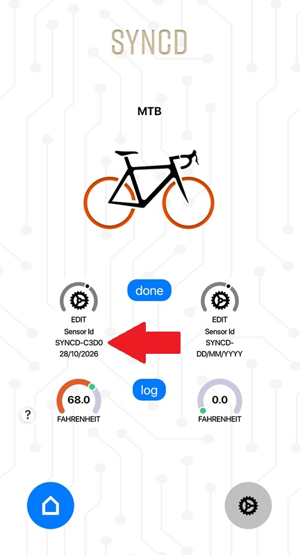

First ride setup
Tubolito SYNCD Setup
Set up TubeWitch for Tubolito SYNCD by entering full sensor names, assigning Front and Rear in TubeWitch, and choosing pressure limits for each wheel.
Keep the TubeWitch data field visible while changing settings in the Garmin Connect IQ mobile app.

Before you start
- Tubolito SYNCD inner tubes installed according to Tubolito's instructions.
- A compatible Garmin device. Check this app's Garmin Store listing for compatibility and release notes.
- The Garmin Connect IQ mobile app or Garmin Express to change TubeWitch settings.
- The full Bluetooth name for each sensor, such as
SYNCD-C3D0.
Follow Tubolito's SYNCD instructions for installing the tubes and using its mobile app.
Setup Steps
- Install TubeWitch for Tubolito SYNCD and fully reboot your Garmin device.
- Add the data field to a Garmin data screen and
 leave the TubeWitch field visible.
leave the TubeWitch field visible. - Rotate the wheels to wake the sensors.
- In the Connect IQ mobile app, open TubeWitch for Tubolito SYNCD settings and select the required Unit of Measure.
- Open Sensor Set #1. Choose Front & Rear, Front Only or Rear Only under Enabled Sensors.
- Enter the complete sensor name in Front Sensor ID or Rear Sensor ID for the wheel where that sensor is installed.
- Set Front Low Target / Front High Target and Rear Low Target / Rear High Target as needed, using your selected units.
- Back out of the nested Sensor Set and tap Save immediately. Reopen settings to confirm the names and targets were saved.
- Confirm live pressures for the enabled wheels before riding.
Enter the full sensor name
Enter the complete advertised name, including its prefix and hyphen. For example, enter SYNCD-C3D0, not just C3D0. The app also accepts the supported PSENS-1734 name format.
Letters are normalized to uppercase, and spaces before or after a valid name are trimmed. When Show Sensor IDs is enabled, the Garmin data field shows the final four characters to save space.
Entering a name in Front Sensor ID or Rear Sensor ID assigns that sensor to the corresponding wheel in TubeWitch. No sensor pairing is required in Garmin's sensor menu.

Set pressure targets in TubeWitch
Each sensor set has separate low and high targets for the front and rear wheel. TubeWitch uses these targets to determine low and high pressure status.
- 0 means unset. That individual limit will not trigger a pressure alarm. All targets start at 0.
- When both limits are set, the high target must be greater than the low target.
- Pressure below the low target is low; pressure above the high target is high. Pressure equal to a target does not cross that limit.
Choose units before setting targets
Targets use the currently selected PSI, bar or kPa unit. Changing units does not convert saved target numbers. After changing units, update the targets in every configured sensor set and reboot Garmin as recommended.
Saving settings
Leave the TubeWitch data field visible on your Garmin device. Change settings in the Connect IQ mobile app, back out of the Sensor Set, and tap Save before reopening the group.
General settings-saving tips
Even when Garmin is working normally, the steps below can help if settings do not save reliably.
First, make sure the TubeWitch data field is visible on your Garmin device before changing settings in the Connect IQ mobile app.
If sensor IDs or other settings are not being saved by the Garmin Connect IQ mobile app, try entering one sensor ID first and saving immediately before entering the second. Garmin's save process can be inconsistent when many settings are changed at once.
Use Garmin Express for the most reliable way to save settings.
If settings still do not save, follow Settings Not Saving or try Garmin Express.
Multiple Sensor Sets
TubeWitch supports up to 5 different Sensor Sets, each with its own pair of front and rear sensors.
First, use the Connect IQ mobile app to assign your full sensor names to each Sensor Set in the TubeWitch settings.
Once all of the sensor sets are saved correctly, there are 3 options for switching between bikes:
Switching Sensor Sets
- Manual Selection: Each time you want to switch bikes, open the Garmin Connect IQ mobile app and change the Active Sensor Set to the Sensor Set # of your choice.
- Auto Switch: Change the Active Sensor Set to Auto. TubeWitch will automatically scan your configured sensor sets, checking each one for 10 seconds until it finds an active pair of sensors.
- Touch Selection: Enable Touch Data Field under Touch Settings. This allows you to cycle between your configured sensor sets simply by tapping on the TubeWitch data field on your Edge.
Auto Switch and Touch Selection can be used together or individually.
To make it easier to see which bike is currently selected, try enabling Show Sensor Set Name under the Sensor Labels section in settings. This helps by showing which sensor set is active when using a wide data field.
Note that the TubeWitch sensor sets are not tied to your Garmin Activity Profiles. Any sensor set can be used with any Profile on your Garmin.
Need more help?
If your setup issues are not addressed on this page, see Tubolito Troubleshooting for step-by-step fixes or Tubolito FAQ for common questions.